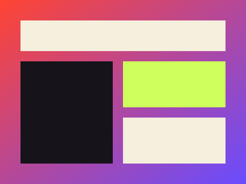

Rebrand & Site →

A full rebrand and marketing site for a print studio, built to feel handmade and slightly chaotic on purpose.
The studio wanted to move away from a generic, corporate-feeling web presence toward something that read as made-by-hand — closer to the texture of their actual print work. I led the visual rebrand and built the marketing site end to end, from moodboard through shipped code.
Brand direction, UI design, and front-end build. Designed in Figma, built with React and GSAP for the scroll and hover motion.